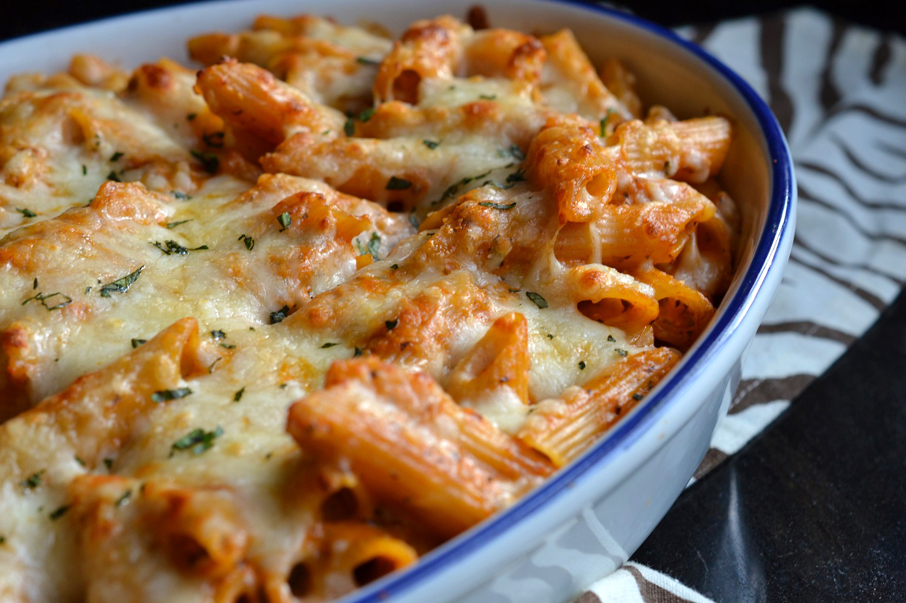

Penne a la Vodka

Description
This penne alla vodka recipe is quick, easy, and incredibly delicious. It's the perfect impressive weeknight dinner!
Ingredients
- 1 (28 ounce) can whole peeled tomatoes (preferably San Marzano)
- 2 tablespoons olive oil
- 3 ounces pancetta, diced
- ½ cup finely chopped onion
- 2 cloves garlic, finely minced
- ¼ teaspoon crushed red pepper, or more to taste
- 1 teaspoon kosher salt, plus more to taste
- 3 tablespoons tomato paste
- ⅔ cup vodka
- 1 pound rigatoni or penne pasta
- 1 cup heavy cream
- ¼ teaspoon pepper, plus more to taste
- ⅔ cup freshly grated Parmesan cheese
- 2 tablespoons finely chopped parsley
- 3 tablespoons chopped fresh basil
Steps
- Gather all ingredients.
- Place a large pot of salted water over high heat to bring to a boil. Pour tomatoes in a medium bowl and crush well with hands or chop in a food processor. Set aside.
- While water heats, prepare the sauce: Heat oil and pancetta in a large saucepan or deep skillet over medium-high heat. Cook, stirring frequently until pancetta is crisp, about 5 minutes. Add onion and cook, stirring constantly, until translucent, about 3 minutes. Add garlic and crushed red pepper and cook for 1 minute. Add tomato paste and cook, stirring often, until the tomato paste has taken on a slight brownish color, 2 to 3 minutes. Add vodka and cook until reduced by at least half. Stir in reserved tomatoes and juices and bring mixture to a simmer. Reduce heat and simmer until thickened, about 10 minutes.
- While sauce reduces, add pasta to boiling water and cook, according to package directions until al dente, 11 to 12 minutes.
- Once sauce is reduced, stir in heavy cream and pepper and cook for 3 minutes, stirring often. Stir in 1/3 cup cheese, parsley, basil and pasta until well combined. Season with additional salt and pepper if desired.
- Sprinkle with remaining cheese and more herbs if desired.
- Serve and enjoy.
Return to Homepage
recipe from allrecipes.com/recipe/8513545/penne-alla-vodka/